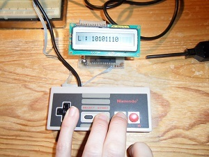

Vous n'êtes pas seuls dans l'Univers !

/
Lire une manette de NINTENDO NES
Lire une manette de NINTENDO NES.
1) Présentation
Le « NES » est une console de jeux fabriquée par la firme japonaise NINTENDO.
« NES » est l'abréviation anglaise de « NINTENDO Entertainment System », que l'on peut traduire en français par « Système de Divertissement de NINTENDO ».
Cette console de jeux vidéos, sortie à partir de 1985 en Amérique du Nord, a été un grand succès.
La manette qui équipe cette console est de conception électronique simple.
Elle peut s'obtenir seule, par Internet.
2) Investigations
Afin de pouvoir utiliser cette manette dans des montages électroniques, il faut en maîtriser le fonctionnement.
Il s'agit donc d'ouvrir cette dernière.
Pour ce faire, un petit tournevis cruciforme suffira.

{kind=link}
{kind=link}
{kind=link}
La manette ne renferme qu'un seul circuit intégré : un composant qui porte la référence TC4021BP, qui est un registre à décalage à huit étages, avec la possibilité d'avoir un chargement asynchrone d'une donnée, pour chacun de ces huit étages.
Cela tombe bien, car il y a présisément huit touches sur la manette.
Sur la photographie du centre, les endroits noirs qui ne correspondent pas à l'emplacement des huit touches sont des résistances de tirage imprimées.
Elles servent à relier chacune des entrées « PI1 » à « PI8 » du circuit intégré à la tension positive d'alimentation, ce qui correspond à un « 1 » logique, quand une touche n'est pas appuyée.
Ceci permet d'éviter d'avoir un niveau logique indéterminé sur les entrées « PI1 » à « PI8 ».
Lorsqu'une touche est appuyée, la broche correspondante est reliée à la masse du circuit, ce qui produit un « 0 » logique.
Le circuit intégré TC4021BP permet d'accéder aux trois derniers étages du registre à décalage, à savoir « Q6 », « Q7 » et « Q8 », mais seul le dernier étage est utilisé par la console de jeux vidéos.
Lorsque l'entrée « P/~S » est soumise à un « 1 » logique, chacun des huit étages du registre à décalage prend un état bas si la touche correspondante est appuyée, ou un état haut sinon.
La sortie « Q8 » représente donc l'état de la touche connectée à la broche « PI8 ».
Pour obtenir l'état des autres touches à partir de la seule information logique de la sortie « Q8 », il faut mettre l'entrée « P/~S » à un « 0 » logique.
A chaque fois qu'un front montant est appliqué sur l'entrée « CLOCK » du circuit intégré, le contenu du registre à décalage est décalé vers la sortie « Q8 », ce qui fait qu'après le premier front montant sur l'entrée « CLOCK », « Q8 » représente désormais l'état logique de la touche connectée à « PI7 », puis, après le deuxième front montant, celui de la touche connectée à « PI6 ».
Il faut donc un total de sept fronts montants à appliquer sur l'entrée « CLOCK », pour obtenir l'état de toutes les touches de la manette.
Les fronts montants doivent être suffisament proches pour permettre d'actualiser fréquemment cette information.
 La datasheet du circuit intégré TC4021
La datasheet du circuit intégré TC4021
Le tableau suivant indique les connexions entre la manette et le circuit intégré de registre à décalage.
| Bouton | Entrée du circuit intégré TC4021 | Position du bit |
|---|---|---|
| Croix directionnelle, DROITE | PI1 - Broche 7 | 1 |
| Croix directionnelle, GAUCHE | PI2 - Broche 6 | 2 |
| Croix directionnelle, BAS | PI3 - Broche 5 | 3 |
| Croix directionnelle, HAUT | PI4 - Broche 4 | 4 |
| START | PI5 - Broche 13 | 5 |
| SELECT | PI6 - Broche 14 | 6 |
| B | PI7 - Broche 15 | 7 |
| A | PI8 - Broche 1 | 8 |
3) Application
L'application proposée ici lit l'état logique de chacune des huit touches de la manette de NINTENDO NES, et l'affiche éventuellement sur un afficheur alphanumérique, commandé par un bus I2C.

Remarque : Il n'est pas nécessaire d'utiliser ce montage, et d'y intégrer un afficheur LCD.
L'ensemble qui va suivre est donné à titre d'exemple.
L'emploi d'un afficheur alphanumérique permet de visualiser le bon fonctionnement du dispositif, mais des LED pourraient tout aussi bien faire l'affaire.
3-1) Configuration matérielle
Pour en savoir plus sur le pilotage d'un afficheur alphanumérique avec un bus I2C, ouvrez ce lien.
L'afficheur alphanumérique, et le système qui le commande, ne sont là que pour mettre en évidence la bonne lecture de l'état des touches de la manette de la NINTENDO NES par le microcontrôleur PIC18F4550.
Cet afficheur, à commande parallèle, a ses broches « R/S », « R/W », « E», et « DB0 » à « DB7 », reliées à un circuit intégré MCP23017.
Ce dernier est un expanseur de ports commandable par un bus I2C, et les connexions entre ce circuit et le microcontrôleur PIC18F4550 sont indiquées dans le tableau ci-après.
Les broches « RB1 / AN10 / INT1 / SCK / SCL » et « RB0 / AN12 / INT0 / FLT0 / SDI / SDA » sont reliées au + 5 volts par des résistances de tirage de 10 kilo Ohms.
| Microcontrôleur PIC18F4550 | +5V | 0V | RB1/AN10/INT1/SCK/SCL | RB0/AN12/INT0/FLT0/SDI/SDA |
|---|---|---|---|---|
| Circuit intégré MCP23017 | +5V | 0V | SCL | SDA |
Le tableau suivant montre comment est connecté le microcontrôleur PIC18F4550 à la manette de NINTENDO NES.
| Microcontrôleur PIC18F4550 | +5V | 0V | RD0/SPP0 | RD1/SPP1 | RD2/SPP2 |
|---|---|---|---|---|---|
| Manette de NINTENDO NES | +5V - Fil blanc | 0V - Fil brun | CLOCK - Fil rouge | P/~S - Fil orange | Q8 - Fil jaune |
{kind=link}
3-2) Programmation du microcontrôleur
Les exemples de fonctions qui suivent sont écrites en langage C pour fonctionner avec le compilateur MCC18.
Ils peuvent néanmoins être utilisés pour d'autres compilateurs.
Il faut indiquer au compilateur, avec des directives du type « #define », à quoi correspondent les termes « CLOCK », « PS » et « Q8 ».
Dans l'exemple présenté ici, cela a été fait au début du fichier source, comme suit :
#define CLOCK PORTDbits.RD0
#define PS PORTDbits.RD1
#define Q8 PORTDbits.RD2
Il convient également d'indiquer que les broches correspondant aux signaux « CLOCK » et « PS » sont utilisées en sorties, et que la broche correspondant au signal « Q8 » est utilisée comme entrée.
Dans le cas présent, cela revient à ajouter les trois lignes suivantes :
TRISDbits.TRISD0 = 0;
TRISDbits.TRISD1 = 0;
TRISDbits.TRISD2 = 1;
La fonction présentée dans l'exemple 2 nécéssite la création d'un tableau global, nommé « touches », et qui contient huit données de type « unsigned char ».
Ce tableau est à déclarer comme ceci :
unsigned char touches[8] = {0};
Code source : Exemple 1 - Affichage de l'état de chacune des huit touches de la manette
void AfficherLectureManette(void)
{
int k;
PS = 1; /* Mémorisation des états logiques correspondants
à chacune des huit touches de la manette */
Delai(3);
PS = 0;
if(Q8 == 0) /* L'état logique de la sortie « Q8 » représente
celui de la touche reliée
à la broche « PI8 » */
{
AfficheCaractere('0');
}
else
{
AfficheCaractere('1');
}
CLOCK = 1; /* Envoi d'un front montant
sur l'entrée « CLOCK » du registre
à décalage */
Delai(3);
CLOCK = 0;
for(k = 0; k < 7; k++) /* Il faut envoyer
sept fronts montants pour lire
tout le contenu du registre à décalage */
{
if(Q8 == 0) /* L'état logique de la sortie « Q8 » représente
celui de la touche reliée
à la broche « PI(8 - k - 1) » */
{
AfficheCaractere('0');
}
else
{
AfficheCaractere('1');
}
CLOCK = 1; /* Envoi d'un front montant
sur l'entrée « CLOCK » du registre
à décalage */
Delai(3);
CLOCK = 0;
}
}
Code source : Exemple 2 - Enregistrement de l'état de chacune des huit touches dans un tableau
void EnregistrerLectureTableau(void)
{
int k;
PS = 1; /* Mémorisation des états logiques correspondants
à chacune des huit touches de la manette */
Delai(3);
PS = 0;
touches[8] = Q8; /* L'état logique de la sortie « Q8 » représente
celui de la touche reliée
à la broche « PI8 » */
CLOCK = 1; /* Envoi d'un front montant
sur l'entrée « CLOCK » du registre
à décalage */
Delai(3);
CLOCK = 0;
for(k = 7; k > 0; k--) /* Il faut envoyer
sept fronts montants pour lire
tout le contenu du registre à décalage */
{
touches[k] = Q8; /* L'état logique de la sortie « Q8 » représente
celui de la touche reliée
à la broche « PI(8 - k - 1) » */
CLOCK = 1; /* Envoi d'un front montant
sur l'entrée « CLOCK » du registre
à décalage */
Delai(3);
CLOCK = 0;
}
}
Code source : Exemple 3 - Récupération de l'état de chacune des huit touches dans une variable
unsigned char ObtenirLectureVariable(void)
{
int k;
unsigned char valeur = 0;
PS = 1; /* Mémorisation des états logiques correspondants
à chacune des huit touches de la manette */
Delai(3);
PS = 0;
valeur |= (Q8 << 7); /* L'état logique de la sortie « Q8 » représente
celui de la touche reliée
à la broche « PI8 » */
CLOCK = 1; /* Envoi d'un front montant
sur l'entrée « CLOCK » du registre
à décalage */
Delai(3);
CLOCK = 0;
for(k = 7; k > 0; k--) /* Il faut envoyer
sept fronts montants pour lire
tout le contenu du registre à décalage */
{
valeur |= (Q8 << (k - 1)); /* L'état logique de la sortie « Q8 » représente
celui de la touche reliée
à la broche « PI(8 - k - 1) » */
CLOCK = 1; /* Envoi d'un front montant
sur l'entrée « CLOCK » du registre
à décalage */
Delai(3);
CLOCK = 0;
}
return valeur;
}
3-3) Les essais
L'afficheur alphanumérique indique la valeur des bits obtenus en sortie du registre à décalage.
Le huitième bit est affiché à gauche.
L'affichage d'un « 0 » correspond à l'appui d'une touche, et l'affichage d'un « 1 » correspond à une touche qui n'est pas appuyée.
|  |
{kind=link}
{kind=link}
{kind=link}
Commentaires (0)
Ajouter un commentaire